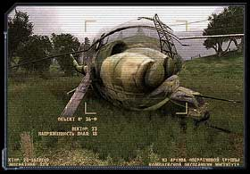

09:15, понедельник, 30 мая, год 5 со дня формирования Зоны
Александр Новиков физик-ядерщик
Исходными данными для начала исследования аномального объекта № 36-A
(«Карусель», «Пузырь») стал рапорт полковника Ермилова (воинская часть 3050)
об обнаружении этой аномалии вблизи деревни Копачи (60% потерь личного
состава). Я принял участие в изучении данного объекта в составе оперативной
исследовательской группы. Подробные результаты представлены в «Отчете по
исследованию аномальных объектов 30 километровой Зоны отчуждения» № 30-08.

Карусель объект №36-A, фото A. Новикова
Объект определяется по видимым визуальным искажениям, легкому пылевому вихрю
и разбросанным частям тел животных и людей вокруг аномалии и надежно
детектируется стандартным детектором. Радиационный фон вблизи объекта не
превышает фоновых значений. При попадании в поле действия «Карусели» (далее
используется этот термин, как наиболее употребимый в Зоне) любого объекта
происходит прямое взаимодействие с полем аномалии, поднятие в воздух любого
живого существа, его раскручивание, что в большинстве случаев приводит к
деструктуризации (гибели) объекта. Аномалия достаточно стабильна в
пространственных координатах и продолжительна во временном интервале. Многие
исследователи Зоны используют ее как дополнительную защиту при атаках
мутантов, маневрами заманивая атакующих особей в зону действия аномалии.
Следует быть предельно осторожным в отношении данной аномалии в ночное время
суток.
Природа этой вихреподобной аномалии до конца не известна. Прямые
исследования объекта № 36-A затруднены по причине разрушения любого вида
датчиков при непосредственном контакте с полем аномалии.
Имеются отрывочные сведения о генерации данным объектом аномальных предметов
(артефактов). Данный вопрос требует тщательных исследований.